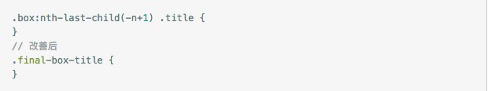

web 移动端动画性能优化
1. 动画在浏览器渲染过程
2. 动画在浏览器优化原理
3. FLIP 技术提升动画效率
4. FLIP 技术简单实现
5. FLIP 技术应用场景，及优缺点
动画在浏览器渲染过程
JavaScript：JavaScript实现动画效果，DOM元素操作等
Style(计算样式)： 确定每个DOM应该应用什么CSS规则。
Layout(布局)：计算每个DOM元素在最终屏幕上显示的大小和位置。由于web页面的元素布局是相对的，所以其中任意一个元素的位置发生变化，都会联动的引起其他元素发生变化，这个过程叫reflow。
Paint(绘制)：在多个层上绘制DOM元素的的文字、颜色、图像、边框和阴影等。
Composite(渲染层合并)：按照合理的顺序合并图层然后显示到屏幕上。
三种常见的渲染流程

动画在浏览器的优化
优化JavaScript的执行效率
动画实现，避免使用setTimeout或setInterval，尽量使用 requestAnimationFrame 把耗时长的JavaScript代码放到Web Workers中去做防止js阻塞动画在浏览器的优化
降低样式计算的范围和复杂度
降低样式选择器的复杂度  减少需要执行样式计算的元素个数动画在浏览器的优化
避免大规模、复杂的布局
尽可能避免触发布局，减少更改width height等 使用flexbox替代老的布局模型动画在浏览器的优化
减少绘制区域
优先使用渲染层合并属性、控制层数量
使用transform/opacity实现动画效果 应用动画效果的元素提升到其自有的渲染层(translateZ will-change) 管理渲染层、避免过多数量的层使用FLIP 技术提升web动画性能
FLIP 是将一些开销高昂的动画，如针对 width，height，left 或 top 的动画，映射为 transform 动画。通过记录元素的两个快照，一个是元素的初始位置（First - F），另一个是元素的最终位置（Last - L），然后对元素使用一个 transform 变换来反转（Invert - I），让元素看起来还在初始位置，最后移除元素上的 transform 使元素由初始位置运动（Play - P）到最终位置。
FLIP 技术评判
这是一个准则，而不是框架或者库
在移动端这种性能较低的web环境下，可提供较流畅动画
内容可能被扭曲。当进行某些缩放动画时可能导致内容扭曲，毕竟这是一种 Hack 技术